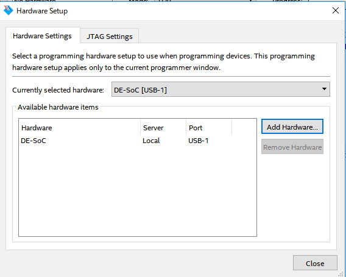
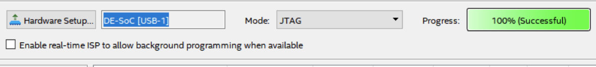

FPGAのコンフィギュレーション
FPGAにコンフィギュレーションするため、実験基板に電源を入れる。
 のアイコンを押すと次のような画面が表示される。
のアイコンを押すと次のような画面が表示される。
上の画面が表示されたらHardware Setupを押し、適宜内容を設定し、Add Hardwareしcloseする。
次に、Add Filesを押し、次の選択画面で出力ファイルを選択し追加する。
その後、Auto Detectを押し、OKを押し、ダイアログは[Yes]を選択する。
追加されたものを消し、もう一度出力ファイルを追加すると指定したハードウェアのFileに出力ファイルが表示される。
最後にStartを押し成功するとProgressに100%(Successful)が表示される。
←back